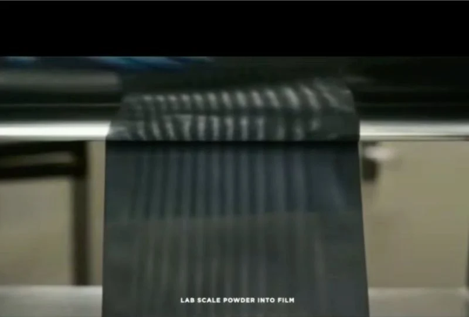
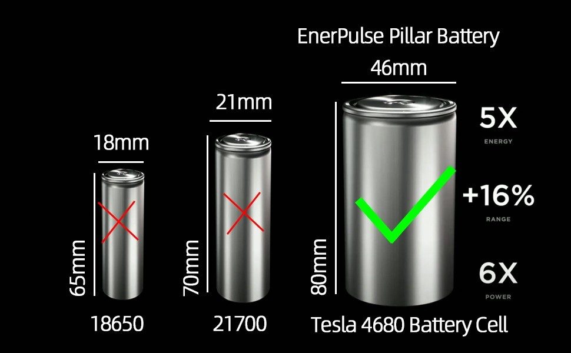
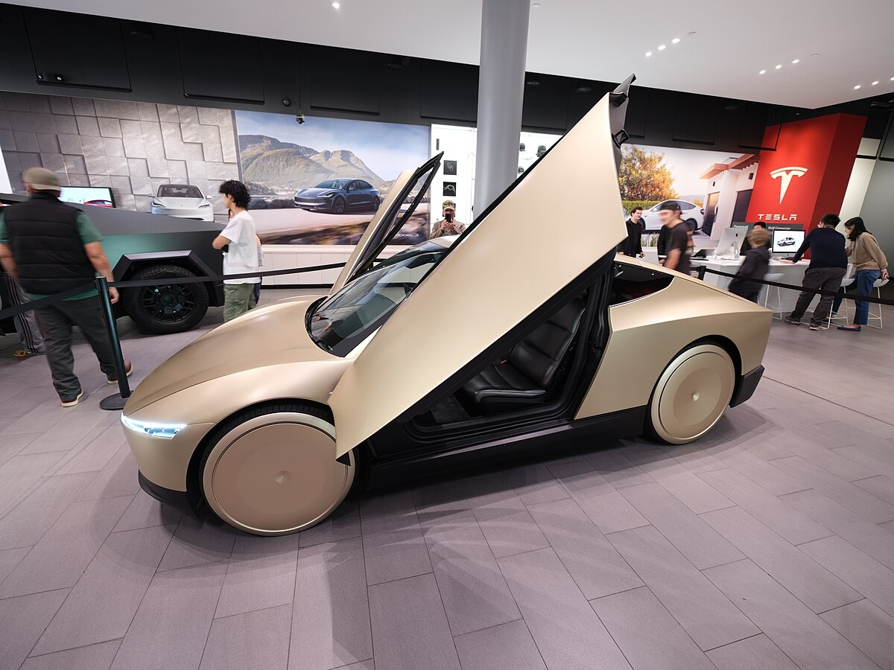
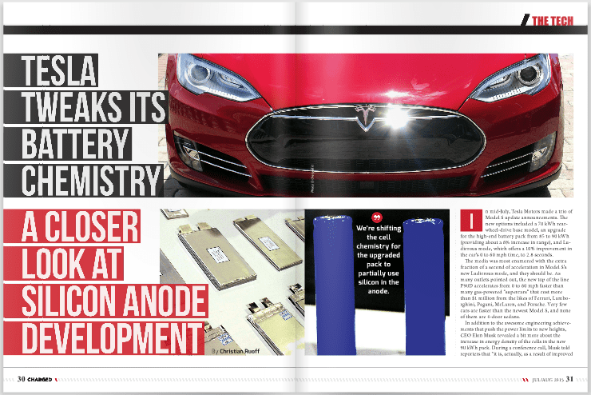

Recent reports from international news outlets indicate that Tesla is significantly accelerating its most ambitious battery initiative in its 21-year history. Sources familiar with the matter suggest the electric vehicle pioneer aims to introduce four entirely new versions of its 4680 battery cell in the year 2026.
These advanced power units are reportedly slated to power a range of upcoming Tesla vehicles, including the highly anticipated electric truck Cybertruck and the fully autonomous ride-hailing vehicle Robotaxi, as well as other electric car models.

This endeavor represents Tesla's largest simultaneous battery development project to date. The company initially unveiled the 4680 battery design in September 2020, with the core objectives of packing more energy into each cell and streamlining the manufacturing process to reduce overall costs.
CEO Elon Musk first detailed plans for this next-generation battery production line, naming it 4680 to reflect the physical dimensions of each cylindrical cell – 46 millimeters in diameter and 80 millimeters in length. At the time of the announcement, Musk stated that this new battery technology would be a crucial enabler for Tesla to introduce a more affordable electric car with a target price of $25,000. Consequently, increasing the output of these 4680 batteries has been widely recognized as the key to lowering the production expenses across Tesla's entire vehicle lineup.

Despite facing initial hurdles in achieving consistent high production output, Tesla is actively pushing forward with the manufacturing of its initial 4680 design, internally referred to as 4680D. The company has set an ambitious goal of increasing the production success rate to 90% by the end of the current year.
Tesla anticipates reaching mass production of this initial design in the second quarter of 2025. Following this milestone, the company plans to launch four subsequent variations of the 4680D battery in 2026, all utilizing a dry coating process for the cathode material.
Key Highlights of Tesla’s Battery Project:
Four New 4680 Battery Cells: Tesla is developing four distinct versions of its in-house 4680 battery, each tailored for specific vehicle applications. These cells are expected to offer significant improvements in energy density, performance, and manufacturing efficiency compared to the current 2170 and 2710 cells.
Advanced Manufacturing Techniques: The new batteries will utilize a dry cathode process, which is expected to make production easier and more cost-effective. Tesla aims to achieve a 90% production yield rate by the end of the year, overcoming previous challenges in scaling up this technology.

Cell Code Names and Applications:
- NC05: Designed for easy manufacturing, this cell will power Tesla’s upcoming robotaxi (Cybercab) and the anticipated $25,000 entry-level model, making electric vehicles more accessible.
- NC20: A larger-format cell optimized for SUVs and the Cybertruck, offering enhanced capacity and towing capabilities, especially in challenging conditions.
- NC30 & NC50: These advanced cells will be the first in Tesla’s lineup to use silicon-carbon (SiC) anodes, enabling faster charging and improved energy output. The NC30 is expected for future SUVs and the Cybertruck, while the NC50 will target high-performance models like the new Roadster and Plaid variants.

Strategic Importance: This battery innovation is central to Tesla’s strategy to lower costs, boost margins, and accelerate the adoption of electric vehicles. The new cells are expected to enable faster charging, longer range, and improved overall performance, addressing key barriers to mass EV adoption.
- Timeline: Tesla plans to achieve mass production of these new batteries by the second quarter of 2025, with the full launch of all four cell types slated for 2026.
As Tesla intensifies its focus on battery technology, the company is positioning itself to lead the next wave of innovation in electric mobility. The success of this project could redefine battery standards across the industry and further solidify Tesla’s role as a pioneer in sustainable transportation.